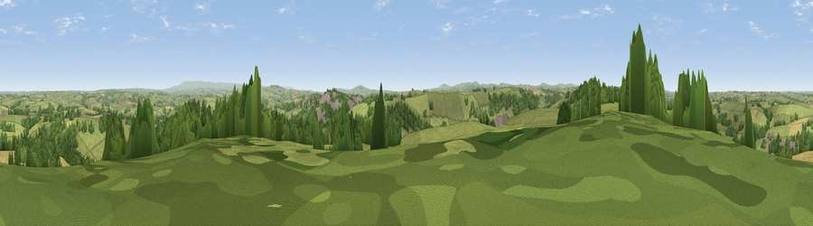

Viewpoint near St Stephens
#17700 in England · top 31% of its area beats it · near St StephensThe view, rendered

A 360° render of this exact spot computed from the terrain model, tree cover and land cover — summer colours, afternoon light, calibrated against photographs of famous viewpoints. Real trees, hedges and buildings will differ in detail.
The panorama
Grey silhouette: terrain skyline in each direction (720 bearings, Earth curvature and refraction included). Dashed green: skyline with trees (+15 m) and buildings (+8 m) as obstacles. Blue strip: how far the ground is visible on each bearing.
Where the view opens
Wedge length = distance to the farthest visible ground on that bearing (vegetation-aware). Rings at 10, 25 and 50 km.
What fills the view
66% grassland · 22% woodland · 8% cropland · 3% built-up
Angular shares of the visible panorama (visual magnitude), not map area. Landscape diversity 0.40 (0–1 Shannon).
Key numbers
More beautiful places nearby
The staircase of upgrades: each row has a higher view potential than everything closer. Driving times are estimates from straight-line distance, calibrated against real road routing — check an actual route before setting out.
| Place | Direction | Drive | Score |
|---|---|---|---|
| Viewpoint near Launceston | SE · 2 km | ~6 min | 57.0 |
| Viewpoint near Egloskerry | W · 3 km | ~7 min | 57.3 |
| Viewpoint near Tregeare | W · 7 km | ~14 min | 59.9 |
| Larrick Hill | S · 8 km | ~16 min | 60.1 |
| Viewpoint near Tinhay | ESE · 8 km | ~16 min | 61.3 |
| Viewpoint near Bradstone | SE · 9 km | ~18 min | 64.1 |
| Viewpoint near North Hill | SW · 11 km | ~21 min | 68.6 |
| Viewpoint near Warbstow | WNW · 13 km | ~23 min | 71.2 |
50.65141, -4.37822 · source: screening · position refined by local search. Computed location — check access rights before visiting.